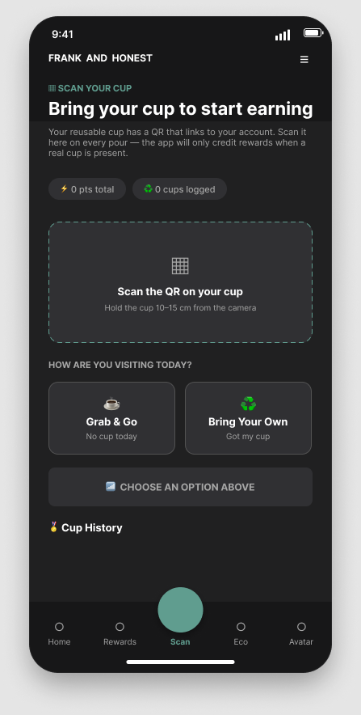
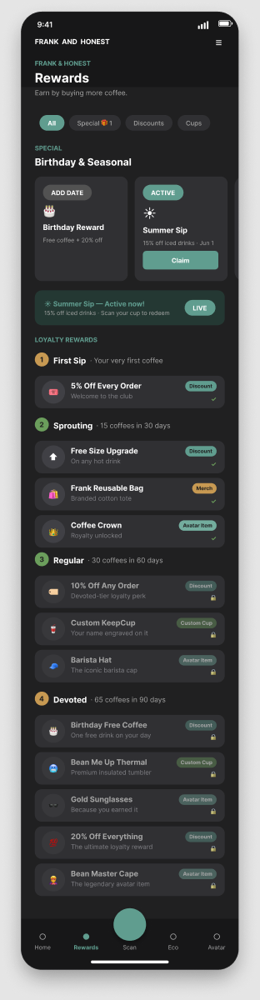
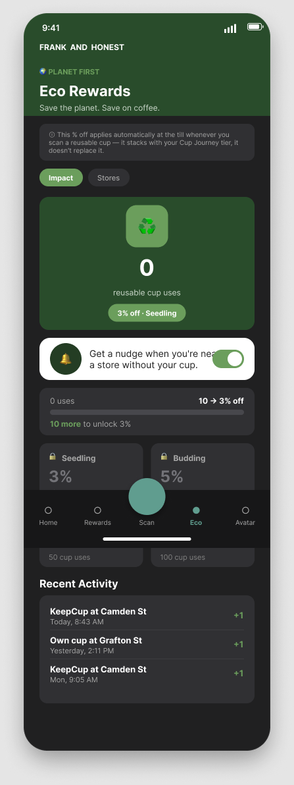

Case 01
UX Research · Behavioural Design · Team Capstone
Frank & Honest
Reusable Cup Initiative
Musgrave gave five students on my MSc a live client brief: a 40 cent discount for bringing a reusable cup, redeemed by almost nobody. We spent four sprints working out why, and built a loyalty-based fix across three real Musgrave apps.
The Brief
A discount nobody uses.
Frank & Honest already offers a 40 cent discount to any customer who brings a reusable cup. Almost nobody claims it — just 3.3% of Centra customers and 2.9% of SuperValu customers, despite 83% of Irish adults already owning a reusable cup. Musgrave brought that statistic to our team of five as the brief. It reframed the whole problem for me the moment I heard it: this was never about persuading people that reusability mattered. It was about closing the gap between already owning a cup and actually using it, in the ten seconds before a barista defaults to a disposable one.
We worked with Musgrave stakeholders Jennifer McWhinney and Claire O'Grady across four sprints, from an early foldable-cup concept through to three connected, coded app prototypes and a business case presented live on 31 July.
"83% of Irish adults own a reusable cup. Only 33% use one consistently. The question was never how to get people to own a cup — it was why ownership wasn't turning into everyday use."
My Contributions
What I owned across four sprints.
01
Secondary Research & Ethics Application
Built the evidence base from the Allegra Project Café Ireland 2025 report, Repak waste data and the DECC 2023 consumer survey — the source of the 83% vs 33% statistic the whole pitch was built around. Drafted large parts of the group's ethics application ahead of primary research.
02
Nudge Theory Framework
Researched Thaler and Sunstein's nudge theory and used it to argue against two ideas on the table early on — a general awareness campaign and "save the planet" messaging — since our own interviews showed persuasion wasn't the bottleneck. This is why Smart Notifications ended up opt-in and tied to a customer's own coffee routine rather than a generic push.
03
Competitor Analysis & the Jodie Persona
Analysed how other coffee brands position sustainability and reusable cup incentives. Led the write-up of Jodie — a 27-year-old Cork marketing manager with two unused reusable cups at home — built from recurring patterns across interview transcripts rather than one memorable quote.
04
Problem Reframing
Worked with teammate Kamran to dig into why our early foldable-cup concept wasn't gaining traction, separating genuine behavioural barriers from assumptions we'd inherited from the brief. That work shifted the group's problem statement away from the cup as an object and toward the decision moment at the till.
05
Figma Prototyping Lead
Took a lead role building and maintaining the interactive prototype across three connected apps — Frank & Honest, My Centra and SuperValu — including onboarding, the home dashboard, Smart Notifications, the rewards catalogue, the scan screen and the eco-impact dashboard, keeping all three visually and functionally consistent.
06
Coded MVP & Business Model
Contributed to the coded version of the app, deployed via GitHub and Vercel so stakeholders could interact with a working build. Fed into the Business Model Canvas — particularly value proposition and customer relationships — and attended every client and supervisor meeting across all four sprints.
Research
Five reasons ownership wasn't turning into use.
National survey data (DECC, 2023), in-depth interviews with customers, store staff and managers across Centra and SuperValu, and later prototype usability testing under our approved ethics application, all pointed to the same conclusion: the barrier wasn't motivation.
40%
Cite forgetting as the main barrier
DECC 2023 public consultation, n = 1,314.
2.9%
SuperValu redemption rate
Vs. 3.3% at Centra — both far below cup ownership.
7.4/10
Desirability score, early deposit-return concept
Set aside over hygiene and cup-return logistics.
The Core Insight
Customers weren't lying when they said sustainability mattered — most already owned a reusable cup, some owned two. What they lacked was a prompt at the exact right moment and a reward worth noticing immediately. That reframed the brief from a motivation problem into a behaviour-design problem, in line with the COM-B model's emphasis on opportunity and prompts alongside capability and motivation.
Persona
Meet Jodie. Not opposed — indifferent.
I led the write-up of Jodie from interview transcripts. She wasn't a hard case to convince — she already owned two reusable cups sitting unused at home. The insight was that sustainability had to compete with a busy job and a routine she wasn't going to rethink for the sake of a cup, and a concrete, immediate, countable reward mattered more than an appeal to conscience she'd already half-agreed with.
"Too many things are competing for my attention to actively think about my environmental impact on any given morning."
Goals
- Get coffee quickly on the way to work
- Feel good about sustainable choices, without extra effort
- Use the reusable cups she already owns
Frustrations
- Forgets her cup most mornings
- Didn't know the 40c discount existed
- Coffee purchases are rarely planned in advance
Design Implications
- A reminder tied to her actual coffee routine, not a generic push
- Countable, immediate rewards over environmental messaging
- Zero extra steps at the till
The Solution
One scan. One loyalty account. No new hardware.
The project started with a deposit-return cup scheme, which tested well on desirability but ran into hygiene and cup-return logistics. Stakeholder feedback pushed the group toward something lighter: work through the loyalty infrastructure Musgrave already operates rather than introduce a new physical object or process. Customers scan their existing loyalty barcode with any reusable cup at the till — no sticker, no second scan, no dedicated hardware.

Home dashboard — Cup Journey progress, the free-coffee punch card, and opt-in Coffee Routine reminders.

The single-scan flow — one QR scan on the cup logs the save and credits the loyalty account.
01
Smart Notifications
Opt-in, user-controlled reminders rather than a generic push. "Coffee Routine" prompts around a customer's usual coffee times, plus a location-based nudge near a participating store — covering both moments our research flagged as highest-risk for forgetting.
02
Tiered Rewards — Seedling to Devoted
A four-tier loyalty ladder (Seedling, Sprouting, Regular, Devoted) with visible, escalating rewards. Survey data showed customers preferred tangible rewards over decorative gamification, so locked rewards are shown greyed out rather than hidden.
03
Single-Scan Design
Reuses the customer's existing loyalty barcode instead of introducing a new action — applying Nielsen's heuristic of recognition over recall, and directly responding to stakeholder feedback that a second scan would slow the till down.
04
Cross-Brand Loyalty via My Centra
One account, one reusable-cup record, usable anywhere across Frank & Honest, Centra, SuperValu and Donnybrook Fair — the clearest expression of the group's central design decision.
05
Avatar Personalisation
An in-app character, inspired by the Nintendo Wii Mii system, unlocking new items as loyalty tiers are reached — a non-financial reason to keep engaging beyond the discount itself.
06
Physical & 3D-Printed Cup Prototype
A branded, foldable silicone cup with an embedded QR/NFC point, revised from an early V1 into a more conventional travel-cup form after stakeholder feedback, then produced as a 3D-printed model for the final presentation.

The tiered rewards catalogue — locked rewards stay visible but greyed out, so the next unlock is always in view.

Eco Rewards — reusable cup uses tracked against the next discount threshold, with a live activity feed.
App Touchpoints
Built across three real Musgrave apps.
The prototype spans three touchpoints across Musgrave's estate, all authenticating against the same underlying loyalty account. I led the Figma work keeping all three consistent with each other, and contributed to the coded build deployed via GitHub and Vercel.
Frank & Honest App
The coffee-specific touchpoint — onboarding, home dashboard, Smart Notifications, rewards catalogue, scan screen, Eco Rewards and avatar personalisation.
Try it live →
SuperValu App
The reward embedded directly in the grocery app's home feed via a Coffee Corner card, since most Frank & Honest purchases happen alongside a grocery shop.
Try it live →
My Centra App
The cross-brand loyalty hub — a single barcode, a combined reusable-cup save count, and one activity feed spanning every linked brand.
Try it live →
MVP & Delivery
Not a mock-up — a working pilot proposal.
The MVP was scoped as the smallest set of changes to Musgrave's existing digital and physical infrastructure needed to test whether a loyalty-linked reusable cup system changes behaviour at the till — a barcode-first pilot proposed for Centra Drumcondra, chosen for its footfall and existing cup-washing station. No new customer-facing hardware: the existing barcode scanners and till software carry the reusable-cup flag alongside the loyalty scan.
The team built and deployed a coded version of the app via GitHub and Vercel so Musgrave stakeholders could interact with a working build rather than a clickable mock-up, backed by an Entity Relationship Diagram and Data Flow Diagram modelling the customer, loyalty account, transaction and sustainability-log data needed to support the reward and reporting layers — kept deliberately narrow to limit personal data collection under GDPR.
Reflection
What I'd do differently.
Budget Real Time for Admin Work
We underestimated how long the ethics application would take, which cost the group close to two weeks of research time. I now treat paperwork with real lead time built in, not something to fit in around the more visible design work.
Sequence Parallel Workstreams Deliberately
Our busiest technical week — coding the MVP, building the physical cup prototype and writing the sprint diary all at once — felt fragmented because the workstreams weren't sequenced against each other. Being explicit up front about ownership would have reduced the friction.
Agree How to Handle Disagreement Before the Pressure Hits
The week before our final presentation surfaced real disagreements under time pressure. We worked through them and delivered a presentation I was proud of, but I'd want the team to agree explicitly, earlier, on how we'd handle friction under deadline pressure.
Theory Only Becomes a Design Principle Once It Matches Evidence
I'd read about nudge theory academically before this project. It only became a real design principle for me once it matched what our own interviews were independently telling us — that alignment between theory and evidence is what actually shapes a screen, not the theory alone.